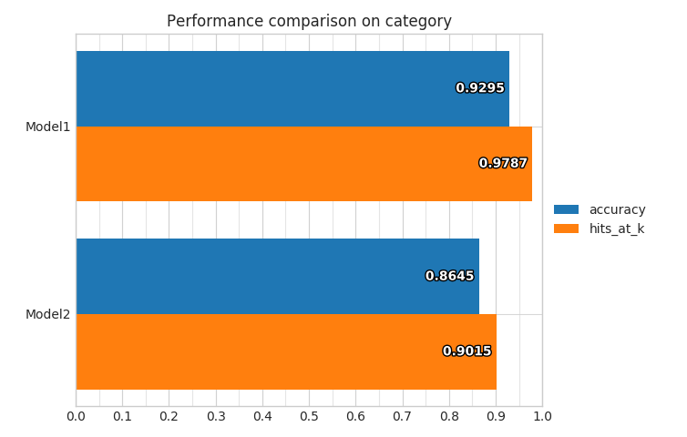

Getting Started
Introduction¶
Ludwig is a toolbox that allows users to train and test deep learning models without the need to write code. It is built on top of TensorFlow.
To train a model you need to provide is a file containing your data, a list of columns to use as inputs, and a list of columns to use as outputs, Ludwig will do the rest. Simple commands can be used to train models both locally and in a distributed way, and to use them to predict new data.
A programmatic API is also available to use Ludwig from Python. A suite of visualization tools allows you to analyze models' training and test performance and to compare them.
Ludwig is built with extensibility principles in mind and is based on datatype abstractions, making it easy to add support for new datatypes as well as new model architectures.
It can be used by practitioners to quickly train and test deep learning models as well as by researchers to obtain strong baselines to compare against and have an experimentation setting that ensures comparability by performing the same data processing and evaluation.
Ludwig provides a set of model architectures that can be combined together to create an end-to-end model for a given use case. As an analogy, if deep learning libraries provide the building blocks to make your building, Ludwig provides the buildings to make your city, and you can choose among the available buildings or add your own building to the set of available ones.
The core design principles baked into the toolbox are: - No coding required: no coding skills are required to train a model and use it for obtaining predictions. - Generality: a new datatype-based approach to deep learning model design makes the tool usable across many different use cases. - Flexibility: experienced users have extensive control over model building and training, while newcomers will find it easy to use. - Extensibility: easy to add new model architecture and new feature datatypes. - Understandability: deep learning model internals are often considered black boxes, but udwig provides standard visualizations to understand their performance and compare their predictions. - Open Source: Apache License 2.0
Installation¶
Ludwig requires you to use Python 3.6+. If you don’t have Python 3 installed, install it by running:
sudo apt install python3 # on ubuntu
brew install python3 # on mac
You may want to use a virtual environment to maintain an isolated Python environment.
virtualenv -p python3 venv
In order to install Ludwig just run:
pip install ludwig
This will install only Ludwig's basic requirements, different feature types require different dependencies.
We divided them as different extras so that users could install only the ones they actually need:
- ludwig[text] for text dependencies.
- ludwig[audio] for audio and speech dependencies.
- ludwig[image] for image dependencies.
- ludwig[hyperopt] for hyperparameter optimization dependencies.
- ludwig[horovod] for distributed training dependencies.
- ludwig[serve] for serving dependencies.
- ludwig[viz] for visualization dependencies.
- ludwig[test] for dependencies needed for testing.
Distributed training is supported with Horovod, which can be installed with pip install ludwig[horovod] or HOROVOD_GPU_OPERATIONS=NCCL pip install ludwig[horovod] for GPU support.
See Horovod's installation guide for full details on available installation options.
Any combination of extra packages can be installed at the same time with pip install ludwig[extra1,extra2,...] like for instance pip install ludwig[text,viz].
The full set of dependencies can be installed with pip install ludwig[full].
For developers who wish to build the source code from the repository:
git clone git@github.com:uber/ludwig.git
cd ludwig
virtualenv -p python3 venv
source venv/bin/activate
pip install -e '.[test]'
Note: that if you are running without GPUs, you may wish to use the CPU-only version of TensorFlow,
which takes up much less space on disk.
To use a CPU-only TensorFlow version, uninstall tensorflow and replace it with tensorflow-cpu after having installed ludwig.
Be sure to install a version within the compatible range as shown in requirements.txt.
Basic Principles¶
Ludwig provides three main functionalities: training models and using them to predict and evaluate them. It is based on datatype abstraction, so that the same data preprocessing and postprocessing will be performed on different datasets that share datatypes and the same encoding and decoding models developed can be re-used across several tasks.
Training a model in Ludwig is pretty straightforward: you provide a dataset file and a model definition YAML file.
The model definition contains a list of input features and output features, all you have to do is specify names of the columns in the dataset that are inputs to your model alongside with their datatypes, and names of columns in the dataset that will be outputs, the target variables which the model will learn to predict. Ludwig will compose a deep learning model accordingly and train it for you.
Currently, the available datatypes in Ludwig are:
- binary
- numerical
- category
- set
- bag
- sequence
- text
- timeseries
- image
- audio
- date
- h3
- vector
By choosing different datatype for inputs and outputs, users can solve many different tasks, for instance:
- text input + category output = text classifier
- image input + category output = image classifier
- image input + text output = image captioning
- audio input + binary output = speaker verification
- text input + sequence output = named entity recognition / summarization
- category, numerical and binary inputs + numerical output = regression
- timeseries input + numerical output = forecasting model
- category, numerical and binary inputs + binary output = fraud detection
take a look at the Examples to see how you can use Ludwig for several more tasks.
The model definition can contain additional information, in particular how to preprocess each column in the data, which encoder and decoder to use for each one, architectural and training parameters, hyperparameters to optimize. This allows ease of use for novices and flexibility for experts.
Training¶
For example, given a text classification dataset like the following:
| doc_text | class |
|---|---|
| Former president Barack Obama ... | politics |
| Juventus hired Cristiano Ronaldo ... | sport |
| LeBron James joins the Lakers ... | sport |
| ... | ... |
you want to learn a model that uses the content of the doc_text column as input to predict the values in the class column.
You can use the following model definition:
{input_features: [{name: doc_text, type: text}], output_features: [{name: class, type: category}]}
and start the training typing the following command in your console:
ludwig train --dataset path/to/file.csv --config "{input_features: [{name: doc_text, type: text}], output_features: [{name: class, type: category}]}"
where path/to/file.csv is the path to a UTF-8 encoded CSV file containing the dataset in the previous table (many other data formats are supported).
Ludwig will:
- Perform a random split of the data.
- Preprocess the dataset.
- Build a ParallelCNN model (the default for text features) that decodes output classes through a softmax classifier.
- Train the model on the training set until the performance on the validation set stops improving.
Training progress will be displayed in the console, but the TensorBoard can also be used.
If you prefer to use an RNN encoder and increase the number of epochs to train for, all you have to do is to change the model definition to:
{input_features: [{name: doc_text, type: text, encoder: rnn}], output_features: [{name: class, type: category}], training: {epochs: 50}}
Refer to the User Guide to find out all the options available to you in the model definition and take a look at the Examples to see how you can use Ludwig for several different tasks.
After training, Ludwig will create a results directory containing the trained model with its hyperparameters and summary statistics of the training process.
You can visualize them using one of the several visualization options available in the visualize tool, for instance:
ludwig visualize --visualization learning_curves --training_statistics path/to/training_statistics.json
This command will display a graph like the following, where you can see loss and accuracy during the training process:
Several more visualizations are available, please refer to Visualizations for more details.
Distributed Training¶
You can distribute the training of your models using Horovod, which allows training on a single machine with multiple GPUs as well as on multiple machines with multiple GPUs. Refer to the User Guide for full details.
Prediction and Evaluation¶
If you want your previously trained model to predict target output values on new data, you can type the following command in your console:
ludwig predict --dataset path/to/data.csv --model_path /path/to/model
Running this command will return model predictions.
If your dataset also contains ground truth values of the target outputs, you can compare them to the predictions obtained from the model to evaluate the model performance.
ludwig evaluate --dataset path/to/data.csv --model_path /path/to/model
This will produce evaluation performance statistics that can be visualized by the visualize tool, which can also be used to compare performances and predictions of different models, for instance:
ludwig visualize --visualization compare_performance --test_statistics path/to/test_statistics_model_1.json path/to/test_statistics_model_2.json
will return a bar plot comparing the models on different metrics:

A handy ludwig experiment command that performs training and prediction one after the other is also available.
Programmatic API¶
Ludwig also provides a simple programmatic API that allows you to train or load a model and use it to obtain predictions on new data:
from ludwig.api import LudwigModel
# train a model
config = {...}
model = LudwigModel(config)
train_stats = model.train(training_data)
# or load a model
model = LudwigModel.load(model_path)
# obtain predictions
predictions = model.predict(test_data)
config containing the same information of the YAML file provided to the command line interface.
More details are provided in the User Guide and in the API documentation.
Extensibility¶
Ludwig is built from the ground up with extensibility in mind. It is easy to add an additional datatype that is not currently supported by adding a datatype-specific implementation of abstract classes that contain functions to preprocess the data, encode it, and decode it.
Furthermore, new models, with their own specific hyperparameters, can be easily added by implementing a class that accepts tensors (of a specific rank, depending on the datatype) as inputs and provides tensors as output. This encourages reuse and sharing new models with the community. Refer to the Developer Guide for further details.